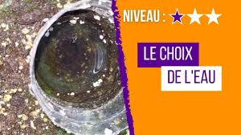
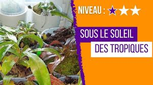
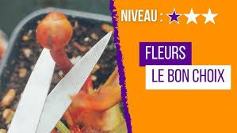
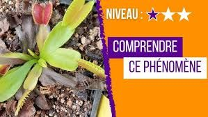
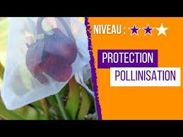
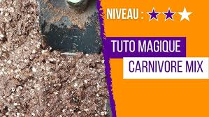
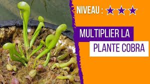
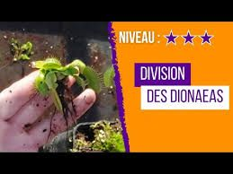
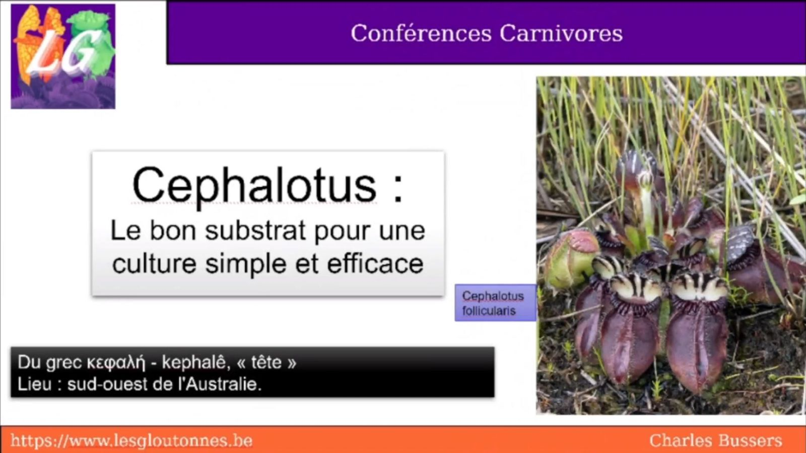

4:28
Quel substrat choisir pour tes plantes carnivores
Découvre les différents types de substrats adaptés aux plantes carnivores et comment choisir le meilleur pour chaque espèce.
RegarderTutoriels complets et conseils pratiques pour la culture de plantes carnivores: Dionaea muscipula (plante attrape-mouches), Sarracenia, Nepenthes, Drosera, Pinguicula et autres. Guides vidéo gratuits pour débutants et experts couvrant l'arrosage, le choix de substrat, le rempotage, l'hivernage, la multiplication, le semis et le traitement des maladies et parasites. Chaîne YouTube Les Gloutonnes avec plus de 50 vidéos éducatives.
Mes guides vidéo pour t'accompagner dans la culture de tes plantes carnivores: Dionaea, Sarracenia, Nepenthes et plus encore
Pour compléter mon offre de plantes carnivores, je mets à ta disposition des guides vidéo pratiques. Ces tutoriels t'aideront à cultiver avec succès tes plantes carnivores, que tu sois débutant ou collectionneur expérimenté.
Tu y trouveras des conseils pratiques, des démonstrations et des astuces pour résoudre les problèmes les plus courants avec les Dionaea muscipula (plantes attrape-mouches), Sarracenia (plantes trompettes), Nepenthes (plantes à urnes), Drosera (plantes à rosée) et autres espèces fascinantes. Toutes ces vidéos sont disponibles gratuitement sur ma chaîne YouTube @lesgloutonnes.
Découvrir la chaîneExplore mes vidéos par thématique pour trouver les conseils adaptés à tes besoins et au type de plantes carnivores que tu cultives
Mes guides essentiels pour garder en vie tes plantes carnivores toute l'année
🌰Conseils de base pour se lancer dans la culture des Dionaea, Sarracenia et Drosera
🌱Conseils pour entretenir tes plantes carnivores sur le long terme et favoriser leur croissance
🌻Pour les collectionneurs expérimentés qui souhaitent perfectionner leurs techniques de culture des espèces exigeantes
🎤Émissions dédiées aux plantes carnivores avec des passionnés et experts du domaine
🥀Conseils pour éviter les erreurs les plus courantes dans la culture des plantes carnivores
Mes guides complets pour garder en vie tes plantes carnivores : Habitat naturel, lieu de culture, pots, hygrométrie, eau et arrosage, substrat, lumière, température, problèmes récurrents et solutions adaptées à chaque espèce.
Des conseils et guides pour avoir les bases afin de se lancer dans la culture des plantes carnivores
Découvre les différents types de substrats adaptés aux plantes carnivores et comment choisir le meilleur pour chaque espèce.
Regarder
L'importance d'utiliser la bonne eau et les techniques d'arrosage pour maintenir tes plantes carnivores en bonne santé.
RegarderGuide pour sélectionner les pots adaptés à chaque type de plante carnivore pour optimiser leur croissance.
Regarder
Comment créer les conditions optimales pour que tes Nepenthes développent de belles urnes chez toi.
RegarderDécouvre les plantes carnivores les plus faciles à cultiver quand on débute dans ce hobby fascinant.
RegarderGuide complet pour réussir tes semis de Drosera, de la préparation des graines jusqu'aux jeunes plants.
Regarder
La réponse à cette question courante et comment gérer la floraison de tes plantes carnivores.
Regarder
Comprendre pourquoi les pièges de ta Dionée noircissent et comment résoudre ce problème courant.
RegarderDes conseils et guides un peu plus précis et plus poussés pour réussir à garder tes plantes carnivores en vie sur du long terme
Conseils et techniques pour préparer tes plantes carnivores à la saison hivernale et assurer leur dormance.
RegarderGuide pas à pas pour créer ta propre tourbière pour cultiver plusieurs types de plantes carnivores ensemble.
Regarder
Techniques pour protéger et polliniser les fleurs de tes plantes carnivores pour récolter des graines viables.
Regarder
Méthode détaillée pour rempoter différents types de plantes carnivores sans les endommager.
RegarderTechniques et conseils avancés pour les collectionneurs expérimentés souhaitant perfectionner leurs méthodes de culture

11:29Guide expert pour la germination et culture de cette plante carnivore rare et exigeante.
Regarder
Technique de division du rhizome pour multiplier tes Dionées et obtenir de nouvelles plantes vigoureuses.
RegarderGuide complet sur la fertilisation adaptée aux différents types de plantes carnivores.
RegarderSolutions efficaces et naturelles pour éliminer les pucerons de tes plantes carnivores sans les endommager.
RegarderEmissions dédiées aux plantes carnivores, produites par des particuliers et des pros, pour débutants et experts

45:52Discussion approfondie sur les dernières découvertes et techniques de culture des plantes carnivores.
RegarderVidéo recommandée
Cette vidéo présente les erreurs les plus courantes que commettent les débutants avec leurs plantes carnivores et comment les éviter. Des conseils essentiels qui t'aideront à maintenir tes plantes en bonne santé.
Regarder maintenantTu as une question spécifique sur la culture de tes Dionaea, Sarracenia, Nepenthes ou autres plantes carnivores ? N'hésite pas à me contacter pour des conseils adaptés à ta situation et à tes conditions de culture.